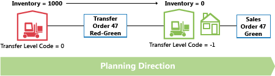
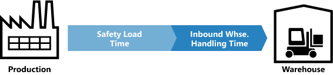

Designdetails: Umlagerungen in der Planung
Umlagerungsaufträge sind ebenfalls eine Versorgungsquelle beim Arbeiten auf der Lagerhaltungsdatenebene. Wenn Sie "Mehrere Lagerorte (Lager)" verwenden, kann die Beschaffungsmethode auf Transfer festgelegt werden, damit der Lagerort aufgefüllt wird, indem Waren an einem anderen Lagerort übertragen werden. In einer Situation mit mehreren Lagern haben Sie möglicherweise eine Kette von Umlagerungen. Die Lieferung an den GRÜNEN Lagerort wird von GELB umgelagert, die Lieferung an den GELBEN Lagerort wird von ROT umgelagert und so weiter. Am Beginn der Kette steht ein Beschaffungssystem von Fertigungsauftrag oder Einkauf.
Hinweis
In diesem Artikel werden Namen von Standorten aus einer früheren Version des Demounternehmens in Business Central verwendet. Diese Namen werden nicht direkt den Standorten im aktuellen Demounternehmen zugeordnet. Wir empfehlen Ihnen, den Artikel zu verwenden, um mehr über Standorte zu erfahren, und nicht als schrittweise Anleitung zur Verwendung des Demounternehmens.
Vergleicht man die folgenden Situationen, wird deutlich, dass die Planungsaufgabe in letzterem komplex werden kann:
- Einem Angebotsauftrag steht ein Bedarfsauftrag direkt gegenüber
- Ein Verkaufsauftrag wird über eine Kette von SKU-Umlagerungen geliefert
Wenn sich die Nachfrage ändert, kann dies einen Welleneffekt in der Kette verursachen. Alle Umlagerungsaufträge sowie der Kauf- und Produktionsauftrag am anderen Ende der Kette müssen aktualisiert werden, um Angebot und Nachfrage wieder ins Gleichgewicht zu bringen.

Warum ist eine Umlagerung ein spezieller Fall?
Umlagerungsaufträge ähneln anderen Aufträgen wie Einkaufs- und Fertigungsaufträge. Hinter den Kulissen sind sie jedoch vollkommen anders.
Ein Unterschied besteht darin, dass eine Umlagerungszeile sowohl Nachfrage als auch Angebot darstellt. Der ausgehende Teil, der versendet wird, ist Bedarf. Der eingehende Teil, der am neuen Lagerort eingeht, ist Vorrat an diesem Lagerort.

Wenn Business Central die Zugangsseite der Umlagerung ändert, muss es eine ähnliche Änderung der Bedarfsseite vornehmen.
Umlagerungen sind abhängiger Bedarf
Die Bedarfs- und Angebotsbeziehung ähnelt Komponenten in Fertigungsauftragszeilen. Der Unterschied besteht darin, dass sich Komponenten in Fertigungsauftragszeilen auf der nächsten Planungsebene befinden und einen anderen Artikel haben. Die beiden Teile der Umlagerung befinden sich auf derselben Ebene für denselben Artikel.
Eine wichtige Ähnlichkeit besteht darin, dass Komponenten und Umlagerungen vom Bedarf abhängen. Der Bedarf von einer Umlagerungszeile wird von der Vorratsseite der Umlagerung bestimmt. Wenn sich der Vorrat ändert, wird die Nachfrage direkt beeinflusst.
Außer wenn die Planungsflexibilität „Keine“ ist, sollte eine Umlagerungszeile nicht als unabhängiger Bedarf in der Planung behandelt werden.
Im Planungsverfahren sollte der Umlagerungsbedarf nur berücksichtigt werden, nachdem das Planungssystem die Bedarfsseite verarbeitet hat. Vor dieser Verarbeitung ist der tatsächliche Bedarf nicht bekannt. Bei Umlagerungsaufträgen ist die Reihenfolge der Änderungen wichtig.
Planungssequenz
Die folgende Abbildung zeigt ein Beispiel für eine Umlagerungskette.
In diesem Beispiel bestellt ein Debitor den Artikel an Lagerort GRÜN. Lagerort GRÜN wird durch Umlagerung vom Zentrallager ROT angegeben. Das zentrale Lager ROT wird durch Umlagerung von der Produktion zu Lagerort BLAU beliefert.
In diesem Beispiel beginnt das Planungssystem mit dem Debitorenbedarf und arbeitet sich zurück durch die Kette. Die Bedarfe und Vorräte werden an einem Lagerort gleichzeitig verarbeitet.

Umlagerungsebenencode
Der Code der Umlagerungsebene der SKU bestimmt die Sequenz, in der das Planungssystem die Lagerorte verarbeitet.
Der Code der Umlagerungsebene ist ein internes Feld. Das Feld wird berechnet und in der SKU gespeichert, wenn Sie die SKU erstellen oder ändern. Die Berechnung läuft über alle SKUs für eine bestimmte Kombination aus Artikel und Artikelvariante. Die Berechnung verwendet den Lagerortcode und den Umlagerung-von-Code, um die Route zu bestimmen, die für die SKUs verwendet werden soll. Die Kalkulation stellt sicher, dass alle Bedarfe bearbeitet werden.
Der Umlagerungsebenencode ist 0 für SKUs mit einer Beschaffungsmethode Einkaufs- oder Fertigungsauftrag und -1 für die erste Umlagerungsebene, -2 für die zweite Umlagerungsebene usw. In dem Beispiel, das im vorherigen Abschnitt beschrieben wurde, würden die Ebenen daher -1 für ROT und -2 für GRÜN ein, wie in der folgenden Abbildung angezeigt.

Bei der Aktualisierung einer SKU, erkennt das Planungssystem, ob Beschaffungsmethoden für SKUs Zirkelverweisen aufweisen.
Umlagerungen ohne SKU planen
Für weniger fortgeschrittene Lagereinrichtungen können Sie Lagerorte verwenden und manuelle Umlagerungen zwischen Lagerorten vornehmen, auch wenn Sie keine SKUs verwenden. Beispielsweise könnte die Umlagerung einen Kundenauftrag an diesem Lagerort abdecken. Das Planungssystem reagiert auf Änderungen im Bedarf.
Bei manuellen Übertragungen analysiert das Planungssystem Umlagerungsaufträge und plant dann die Reihenfolge, in der die Lagerorte verarbeitet werden. Intern verwendet das Planungssystem temporäre SKUs, die Ümlagerungslevelcodes haben.

Bei mehreren Umlagerungen zu einem Lagerort definiert der erste Umlagerungsauftrag die Planungsrichtung. Umlagerungen, die in die entgegengesetzte Richtung werden storniert.
Ändern der Menge mit Reservierungen
Beim Ändern der Mengen eines Vorrats berücksichtigt das Planungssystem Reservierungen. Die reservierte Menge stellt die untere Grenze dar, um wie viel das Angebot reduziert werden kann.
Wenn Sie die Menge in einer Umlagerungsauftragszeile ändern, denken Sie an die Untergrenze. Die Untergrenze ist die höchste reservierte Menge der ausgehenden und eingehenden Umlagerungszeilen.
Beispielsweise ist eine Umlagerungsauftragszeile von 117 Stück für die folgenden Positionen reserviert:
- Eine Verkaufszeile von 46
- Eine Einkaufszeile von 24
Auch wenn auf der Eingangsseite möglicherweise ein Überschuss vorhanden ist, können Sie die Umlagerungszeile nicht unter 46 reduzieren.

Ändern der Menge in einer Umlagerungskette
Hier ist ein Beispiel dafür, was passiert, wenn Sie eine Menge in einer Umlagerung ändern.
Ausgangspunkt ist eine ausgeglichene Situation mit einer Umlagerungskette, die einen Verkaufsauftrag von 27 am Lagerort ROT beliefert. An Lagerort BLAU liegt eine entsprechende Bestellung vor. Beide Umlagerungen laufen über den Lagerort PINK. Es gibt zwei Umlagerungsaufträge: BLAU-PINK und PINK-ROT.

Jetzt beschließt der Planer am Lagerort PINK, für den Einkauf zu reservieren.

Die Reservierung bedeutet normalerweise, dass das Planungssystem den Einkaufsauftrag und den Umlagerungsbedarf ignoriert. Es gibt kein Problem, solange es Saldo gibt. Aber was passiert, wenn der ROTE Lagerort die Reihenfolge von 27 auf 22 ändert?

Wenn das Planungssystem erneut ausgeführt wird, sollte es überschüssigen Vorrat loswerden. Jedoch sperrt die Reservierung den Einkauf und die Umlagerung zu einer Menge von 27.
Die ROSA-ROTE Umlagerung wird auf 22 reduziert. Der eingehende Teil der BLUE-PINK-Umlagerung ist nicht reserviert, der ausgehende Teil jedoch. Die Reservierung bedeutet, dass Sie die Menge nicht unter 27 reduzieren können.
Beschaffungszeit
Wenn das Fälligkeitsdatum eines Umlagerungsauftrags berechnet wird, werden verschiedene Arten von Beschaffungszeit berücksichtigt.
Die folgenden Durchlaufzeiten, die aktiv sind, wenn ein Umlagerungsauftrag geplant ist:
- Ausgehende Lagerdurchlaufzeit
- Transportzeit
- Eingehende Lagerdurchlaufzeit
In der Planungszeile werden die folgenden Felder verwendet, um Informationen über die Berechnung bereitzustellen:
- Umlagerungslieferungsdatum
- Startdatum
- Enddatum
- Fälligkeitsdatum
Das Versanddatum der Umlagerungszeile wird im Feld Umlagerungsversanddatum angezeigt. Das Empfangsdatum der Umlagerungszeile wird im Feld Fälligkeitsdatum angezeigt.
Das Start- und Enddatum werden beschreiben die tatsächliche Transportperiode.
Die folgende Abbildung zeigt die Interpretation von Startdatum/-zeit und Enddatum/-zeit auf Planungszeilen im Zusammenhang für Umlagerungsaufträge.

Das Beispiel zeigt die folgenden Berechnungen:
- Warenausg.-Datum + Ausgehende Verarbeitung = Startdatum
- Startzeit + Transportzeit = Endzeit
- Enddatum + Eingehende Lagerdurchlaufzeit = Wareneingangsdatum
Sicherheitsdurchlaufzeit
Das Feld Vorg. Sich.-Zuschl. Besch.-Zt. auf der Seite Fertigungseinrichtung und das zugehörige Feld Sicherh.-Zuschl. Beschaff.-Zt. auf der Seite Artikelkarte werden in der Berechnung eines Umlagerungsauftrags nicht berücksichtigt. Die Sicherheitsdurchlaufzeit beeinflusst jedoch den Gesamtplan. Die Sicherheitsdurchlaufzeit wirkt sich auf den Beschaffungsauftrag (Einkauf oder Produktion) am Anfang der Transportkette aus. Das ist der Punkt, an dem die Artikel an den Lagerort gebracht wurden, von dem sie umgelagert werden.

In der FA-Zeile gilt: Enddatum + Sicherheitszuschlag Beschaffungszeit + Eingehende Lagerdurchlaufzeit = Fälligkeitsdatum.
In der Bestellzeile gilt: Geplantes Wareneingangsdatum + Sicherheitszuschlag Beschaffungszeit + Eingehende Lagerdurchlaufzeit = Erwartetes Wareneingangsdatum.
Neu planen
Wenn Sie eine Umlagerungszeile neu planen, findet das Planungssystem den ausgehenden Teil und ändert das Datum/ die Zeit.
Hinweis
Wenn eine Durchlaufzeit definiert ist, besteht eine Lücke zwischen Lieferung und Eingang. Die Durchlaufzeit kann aus mehr Elementen, wie Transportzeit und Lagerdurchlauf, bestehen. In einer Zeitachse geht das Planungssystem in der Zeit zurück, während es die Elemente ausgleicht.

Wenn Sie das Fälligkeitsdatum auf einer Umlagerungszeile ändern, die Beschaffungszeit berechnet werden, um die ausgehende Seite der Übertragung zu aktualisieren.
Serien und Chargennummern in Umlagerungsketten
Wenn der Bedarf Serien- oder Chargennummern verwendet und Sie das Planungsmodul ausführen, erstellt es Umlagerungsaufträge. Weitere Informationen zu diesem Konzept finden Sie unter Artikel-Attribute. Werden jedoch Serien- oder Chargennummern vom Bedarf entfernt, verwenden die Umlagerungsaufträge noch die Serien- oder Chargennummern und die Planung ignoriert sie (nicht gelöscht).
Order-to-Order-Verbindungen
In diesem Beispiel wird die BLUE-SKU mit einem Wiederbeschaffungsverfahren Bestellung eingerichtet. Für die SKUs PINK und ROT gilt das Charge-für-Charge-Wiederbeschaffungsverfahren. Das Anlegen eines Kundenauftrags für 27 am Lagerort ROT führt zu einer Kette von Umbuchungen. Die letzte Umbuchung erfolgt am Lagerort BLAU und ist verbindlich reserviert. In diesem Beispiel sind die Reservierungen nicht harte Reservierungen, die vom Planer am PINK-Standort Lagerort erstellt wurden. Das Planungssystem erstellt die Bindungen. Die wichtige Unterschied besteht darin, dass das Planungssystem die letzteren ändern kann.

Wenn der Bedarf von 27 zu 22 geändert wird, senkt das Planungssystem die Menge durch die Kette hindurch. Auch die verbindliche Reservierung reduziert sich.
Weitere Informationen
Designdetails: Planungsparameter
Designdetails: Planungs-Zuordnungstabelle
Entwurfsdetails: Handhabung von Richtlinien zur Wiederbestellung
Designdetails: Planung mit oder ohne Lagerortcodes
Entwurfsdetails: Zentrale Konzepte des Planungssystems
Designdetails: Ausgleich von Bedarf und Vorrat
Designdetails: Vorratsplanung
Kostenlose E-Learning-Module für Business Central finden Sie hier